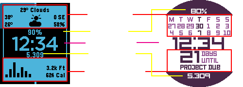

Hi there! Welcome to Modular, the next generation watchface for Pebble. With a watchface like this, you're bound to have questions
regarding functions. This is an information guide to help answer most of them. It is formatted exactly the way it is in the configuration page so you
can understand what each function does line by line aside from the obvious ones. While I would love to individually reply to everyone,
I would rather use that time to program new features or requests that you guys submitted. If you have a question that was not answered here, feel free
to contact me using the "Contact Developer" option on the watchface settings in the Pebble App.
Main

Modular's basic structure is broken down into 5 different parts: 2 modules, 2 text information, and the time. For Classic and Time models, there is also a
progress bar. The background is in the middle while the foreground is on the top and bottom.
The font themes allow you to personalize Modular. Feeling techy? Use Digital. Feeling classy? Go Smooth. Can't decide? Make it a Hybrid which is a mix between the two.
Digital is slightly wider, so certain modules that have a text input will be limited in character count. The Digital theme is also a custom font, meaning that only A-Z
and some symbols are allows in text inputs. For the Smooth font theme, it utilizes the system font and is slimmer allowing for more characters to be shown and more symbols to use. Same goes
for Hybrid.
The date format is only used for the date text information.
BT Vibration stands for Bluetooth Vibration. If toggled on, it will vibrate one time when the bluetooth connection with your cellphone is disconnected. When this occurs,
the top text information is replaced with the text, "BT Off" which stands for Bluetooth Offline. After reconnecting, it will automatically revert back to your top text choice.
I know that this sacrifices one line of information for users while they're disconnected and I'm currently looking to find a better solution without obtrusion.
If you have an idea, feel free to contact me.
Text
Text informations are a way to show basic information like battery life or steps. It was designed to give you flexibility alongside modules to
choose which information is important towards your preferences. For example, a Pebble Time user is less likely to care about battery percentage compared
to a Pebble Time Round user. Currently there are only 4 options: Date, Steps, Temperature, and Battery Level, but there are more planned for a future update.
Modules
Modules are a unique feature for Modular allowing users to expand the information they see for certain areas. For example, someone who
cares about weather information such as highs and lows are more likely to use the weather module rather than use the Temperature on the Text
Information which only shows the temperature and condition. The primary color highlights the information that have a point of interest. The accent color
reflects everything else that does not need to be focused. There are currently 7 modules available with more coming for future updates. I will break down each one of them.
Step Graph
The Step Graph shows your steps for today and the previous 6 days. It scales with the biggest number of steps you took in a day for that time period. It's a neat way to keep
track of your steps for the week and encourage yourself to do better each day. To the right of the module, there is the distance and calories. The distance estimates how far
you have traveled. The unit is automatically selected based on your preferred format in the Pebble App settings. It will show feet and miles for imperial and meter and kilometers
for metric. It automatically adjusts itself from low units to larger units. This information is updated every 5 minutes.
Calendar
The calendar shows the days of the week on the first line, current week, on the second line, and the following week on the third line. It is a dynamic
calendar meaning that it automatically adjusts to show the last 3 days and the next 10 days. This causes it to center the current day in the middle.
I was also planning to have a static option which shows the traditional calendar format but it did not make it in time for release. This will
be added for a future update.
Weather
The weather module is full of information. The units are dependent on the option you have chose in the configuration page.
On the top center, it shows the the temperature and the current condition such as clear, rain, or clouds. To the left, it shows the
highs on the top and the lows on the bottom. To the right, it shows wind speed and direction on the top and the humidity percentage on the bottom.
The wind speed is automatically adjusted to either MPH or KPH based on whether you chose Fahrenheit (imperial) or Celsius (metric).
There are currently two supported weather providers: OpenWeatherMap and Weather Underground. OpenWeatherMap does not require an API key as it is
complimentary. It provides decent weather information. Weather Underground requires your own API key which can be obtained on their website for free.
This is due to the number of calls per minute to the server. Weather Underground provides far more accurate weather data and is recommended to use.
You have the option to use your GPS on your cellphone to grab accurate weather info based on your location. This, however, requires your GPS to be on
all the time and can drain your phone's battery. As an alternative, you can use a fixed location which gives you the weather information of a location
you type in. When you enter a fixed location, it is recommended to use the following format: City, Country. For Weather Underground specifically,
you should enter the country code (US, CA, FR, etc.) in place of the country. Weather Underground uses a different code for certain countries and you may find
them on their website. The weather is grabbed every 30 minutes or when you relaunch the watchface.
Alternative Timezone
The alternative timezone has a slider that allows you set the number of hours to add or subtract on UTC. This is not adjusted to daylight savings
so you will need to manually adjust it.
Countdown
The countdown provides a way to keep you on track of an upcoming day or deadline. It also has a backwards counter which counts the number of
days after the event has occurred. This allows you to use it for special cases such as "X days since I quit smoking".
Note
Note provides an easy way to display some custom text on screen. Use it for reminders or short motivational quotes that fire you up.
My Habits
My Habits is a third party app (made by the awesome guys at Zevive) that I've integrated into Modular. In a brief explanation, it allows
you to reinforce habits you want to implement in your daily life using streaks or counts. It also has a reminder feature in case you do not
want to accumulate points for a certain habit. For more information, I recommend checking out the watchapp on the Pebble App Store.
Frequently Asked Questions
How does this watchface affect my battery life?
Currently, I do not have a grade for Modular since it is still new and I need to wait a certain number of days before Pebble can calulate it.
My goal with every watchface I create is to obtain an A rating which is the highest you can achieve. While Modular is heavy on customization,
it is not heavy on performance. I've optimized the code extensively during testing phase. The screen updates every minute as with most other watchfaces.
There is a hidden sleep mode that turns off many features while you are asleep. All app messages are grouped together which also reduces battery life.
If you notice that your battery life isn't doing well, I recommend contacting Pebble support using the
Pebble app and have them look at the battery logs.
Can I request a feature?
Yes, I would love to hear your suggestions on how to make Modular a better experience for everyone. If you have a request, please contact me.
While I may not be able to implement every suggestion, I will take note of how many people are asking the same request and base my priority on that.
What is KiezelPay?
KiezelPay is a payment platform that allows developers like myself to monetize their watchfaces and watchapps for Pebble. It is not a payment method so no
account creation is required. The payment methods that Kiezel Pay currently supports are PayPal and credit card.
Why do I have to pay for this? Shouldn't it be free?
Developing a watchface, especially something like Modular, takes a lot of time and commitment. If there was no monetary incentive, Modular would not exist in the first place.